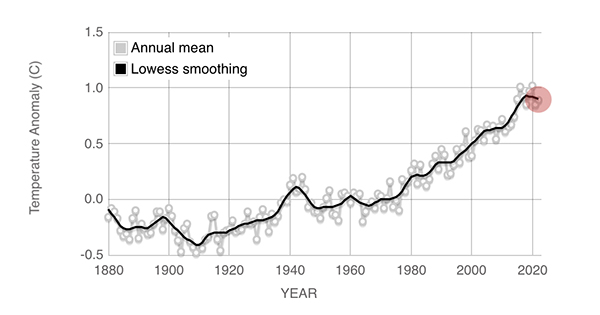
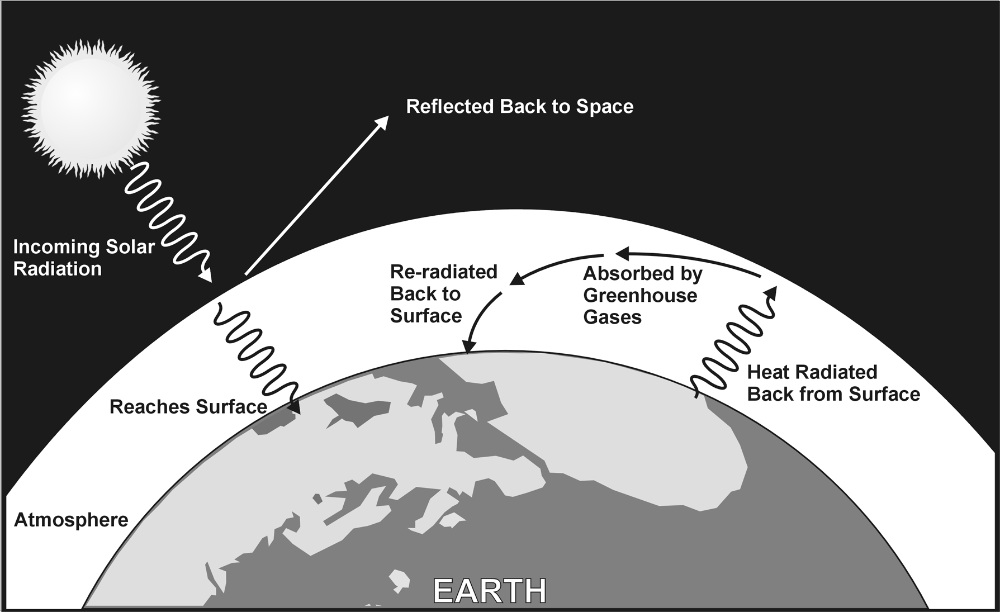

 Multiple independent instrumental datasets show that the climate system is warming. The 2011–2020 decade warmed to an average 1.09 °C [0.95–1.20 °C] compared to the pre-industrial baseline (1850–1900). Surface temperatures are rising by about 0.2 °C per decade, with 2020 reaching a temperature of 1.2 °C above the pre-industrial era. Since 1950, the number of cold days and nights has decreased, and the number of warm days and nights has increased. There was little net warming between the 18th century and the mid-19th century. Climate information for that period comes from climate proxies, such as trees and ice cores. Thermometer records began to provide global coverage around 1850. Historical patterns of warming and cooling, like the Medieval Climate Anomaly and the Little Ice Age, did not occur at the same time across different regions. Temperatures may have reached as high as those of the late-20th century in a limited set of regions. There have been prehistorical episodes of global warming, such as the Paleocene–Eocene Thermal Maximum. However, the modern observed rise in temperature and CO2 concentrations has been so rapid that even abrupt geophysical events in Earth's history do not approach current rates. Evidence of warming from air temperature measurements are reinforced with a wide range of other observations. For example, changes to the natural water cycle have been predicted and observed, such as an increase in the frequency and intensity of heavy precipitation, melting of snow and land ice, and increased atmospheric humidity. Flora and fauna are also behaving in a manner consistent with warming; for instance, plants are flowering earlier in spring. Another key indicator is the cooling of the upper atmosphere, which demonstrates that greenhouse gases are trapping heat near the Earth's surface and preventing it from radiating into space. Regions of the world warm at differing rates. The pattern is independent of where greenhouse gases are emitted, because the gases persist long enough to diffuse across the planet. Since the pre-industrial period, the average surface temperature over land regions has increased almost twice as fast as the global-average surface temperature. This is because of the larger heat capacity of oceans, and because oceans lose more heat by evaporation. The thermal energy in the global climate system has grown with only brief pauses since at least 1970, and over 90% of this extra energy has been stored in the ocean. The rest has heated the atmosphere, melted ice, and warmed the continents. The Northern Hemisphere and the North Pole have warmed much faster than the South Pole and Southern Hemisphere. The Northern Hemisphere not only has much more land, but also more seasonal snow cover and sea ice. As these surfaces flip from reflecting a lot of light to being dark after the ice has melted, they start absorbing more heat. Local black carbon deposits on snow and ice also contribute to Arctic warming. Arctic temperatures are increasing at over twice the rate of the rest of the world. Melting of glaciers and ice sheets in the Arctic disrupts ocean circulation, including a weakened Gulf Stream, further changing the climate.
The climate system experiences various cycles on its own which can last for years (such as the El Niño–Southern Oscillation (ENSO)), decades or even centuries. Other changes are caused by an imbalance of energy that is "external" to the climate system, but not always external to the Earth. Examples of external forcings include changes in the concentrations of greenhouse gases, solar luminosity, volcanic eruptions, and variations in the Earth's orbit around the Sun. To determine the human contribution to climate change, known internal climate variability and natural external forcings need to be ruled out. A key approach is to determine unique "fingerprints" for all potential causes, then compare these fingerprints with observed patterns of climate change. For example, solar forcing can be ruled out as a major cause. Its fingerprint would be warming in the entire atmosphere. Yet, only the lower atmosphere has warmed, consistent with greenhouse gas forcing. Attribution of recent climate change shows that the main driver is elevated greenhouse gases, with aerosols having a dampening effect.
 Greenhouse gases are transparent to sunlight, and thus allow it to pass through the atmosphere to heat the Earth's surface. The Earth radiates it as heat, and greenhouse gases absorb a portion of it. This absorption slows the rate at which heat escapes into space, trapping heat near the Earth's surface and warming it over time. Before the Industrial Revolution, naturally-occurring amounts of greenhouse gases caused the air near the surface to be about 33 °C warmer than it would have been in their absence. While water vapour (~50%) and clouds (~25%) are the biggest contributors to the greenhouse effect, they increase as a function of temperature and are therefore feedbacks. On the other hand, concentrations of gases such as CO2 (~20%), tropospheric ozone, CFCs and nitrous oxide are not temperature-dependent, and are therefore external forcings. Human activity since the Industrial Revolution, mainly extracting and burning fossil fuels (coal, oil, and natural gas), has increased the amount of greenhouse gases in the atmosphere, resulting in a radiative imbalance. In 2019, the concentrations of CO2 and methane had increased by about 48% and 160%, respectively, since 1750. These CO2 levels are higher than they have been at any time during the last 2 million years. Concentrations of methane are far higher than they were over the last 800,000 years. Global anthropogenic greenhouse gas emissions in 2019 were equivalent to 59 billion tonnes of CO2. Of these emissions, 75% was CO2, 18% was methane, 4% was nitrous oxide, and 2% was fluorinated gases. CO2 emissions primarily come from burning fossil fuels to provide energy for transport, manufacturing, heating, and electricity. Additional CO2 emissions come from deforestation and industrial processes, which include the CO2 released by the chemical reactions for making cement, steel, aluminum, and fertiliser. Methane emissions come from livestock, manure, rice cultivation, landfills, wastewater, and coal mining, as well as oil and gas extraction. Nitrous oxide emissions largely come from the microbial decomposition of fertiliser. Despite the contribution of deforestation to greenhouse gas emissions, the Earth's land surface, particularly its forests, remain a significant carbon sink for CO2. Land-surface sink processes, such as carbon fixation in the soil and photosynthesis, remove about 29% of annual global CO2 emissions. The ocean also serves as a significant carbon sink via a two-step process. First, CO2 dissolves in the surface water. Afterwards, the ocean's overturning circulation distributes it deep into the ocean's interior, where it accumulates over time as part of the carbon cycle. Over the last two decades, the world's oceans have absorbed 20 to 30% of emitted CO2.
Air pollution, in the form of aerosols, affects the climate on a large scale. Aerosols scatter and absorb solar radiation. From 1961 to 1990, a gradual reduction in the amount of sunlight reaching the Earth's surface was observed. This phenomenon is popularly known as global dimming, and is attributed to aerosols produced by dust, pollution and combustion of biofuels and fossil fuels. Globally, aerosols have been declining since 1990 due to pollution controls, meaning that they no longer mask greenhouse gas warming as much. Aerosols also have indirect effects on the Earth's radiation budget. Sulfate aerosols act as cloud condensation nuclei and lead to clouds that have more and smaller cloud droplets. These clouds reflect solar radiation more efficiently than clouds with fewer and larger droplets. They also reduce the growth of raindrops, which makes clouds more reflective to incoming sunlight. Indirect effects of aerosols are the largest uncertainty in radiative forcing. While aerosols typically limit global warming by reflecting sunlight, black carbon in soot that falls on snow or ice can contribute to global warming. Not only does this increase the absorption of sunlight, it also increases melting and sea-level rise. Limiting new black carbon deposits in the Arctic could reduce global warming by 0.2 °C by 2050.
Humans change the Earth's surface mainly to create more agricultural land. Today, agriculture takes up 34% of Earth's land area, while 26% is forests, and 30% is uninhabitable (glaciers, deserts, etc.). The amount of forested land continues to decrease, which is the main land use change that causes global warming. Deforestation releases CO2 contained in trees when they are destroyed, plus it prevents those trees from absorbing more CO2 in the future. The main causes of deforestation are: permanent land-use change from forest to agricultural land producing products such as beef and palm oil (27%), logging to produce forestry/forest products (26%), short term shifting cultivation (24%), and wildfires (23%). The type of vegetation in a region affects the local temperature. It impacts how much of the sunlight gets reflected back into space (albedo), and how much heat is lost by evaporation. For instance, the change from a dark forest to grassland makes the surface lighter, causing it to reflect more sunlight. Deforestation can also affect temperatures by modifying the release of chemical compounds that influence clouds, and by changing wind patterns. In tropic and temperate areas the net effect is to produce significant warming, while at latitudes closer to the poles a gain of albedo (as forest is replaced by snow cover) leads to a cooling effect. Globally, these effects are estimated to have led to a slight cooling, dominated by an increase in surface albedo. According to FAO, forest degradation aggravates the impacts of climate change as it reduces the carbon sequestration abilities of forests. Indeed, among their many benefits, forests also have the potential to reduce the impact of high temperatures.